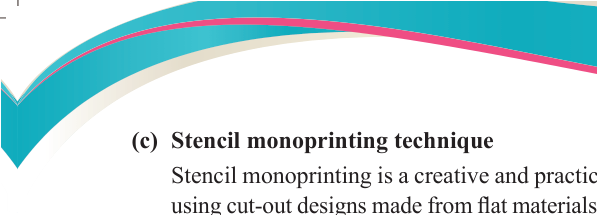
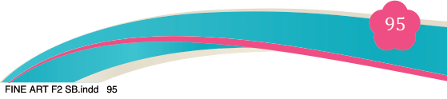
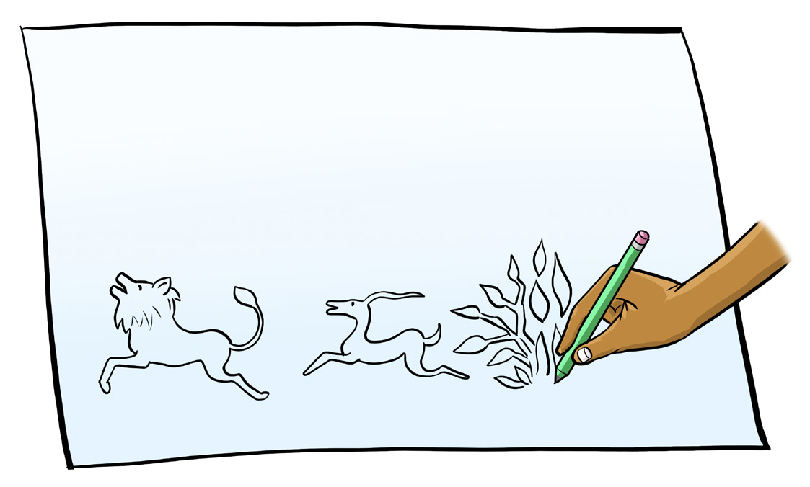

Fine Art for Secondary Schools

95

Student’s Book Form Two
(c) Stencil monoprinting technique
Stencil monoprinting is a creative and practical printing method that involves
using cut-out designs made from flat materials such as paper, cardboard, plastic
or vinyl. These stencil shapes are arranged on an inked plate and then a printing
surface such as paper or fabric is placed on top. The image is transferred by applying pressure by hand or with a baren, resulting in a unique monoprint.
This method is commonly used in both artistic and commercial settings.
Stencil functional printed artworks can also appear in various areas such as street art or graffiti, T-shirts and textile materials, wall décor, event posters and handmade crafts. Stencil mono printing is popular due to its simplicity, affordability and ease to reproduce the same design multiple times.
Materials and tools:
(i) Stencil sheet (Made from paper, vinyl, plastic, mesh, lace, or cardboard)
(ii) Cutting tool (Such as scissor or a craft knife)
(iii) Paint (Type depending on the surface)
(iv) Brush, sponge or roller (For application of paint)
(v) Printing surface (eg., paper, fabric, canvas, or any flat material)
Steps to follow:
Step 1: Design
Draw a simple pattern with clear outlines. Complex or detailed images may
be difficult to cut and print accurately. Choose a theme that has meaning, for example wildlife, culture or the environment.

Figure 5.18: The first stage of sketching for stencil monoprint technique
Step 2: Cutting
Carefully cut out the design using scissors or a craft knife. Ensure the stencil stays firm and strong enough to be re-used.
04/08/2025 13:54